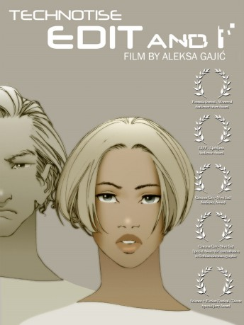

#4251 Robot Metropolis
Alternativ: Technotise: Edit & I (Englischer Titel)
 
 IMDB-Wertung: 7.5 / 10
IMDB-Wertung: 7.5 / 10  Metascore: 0
Metascore: 0 
Belgrad in der nahen Zukunft, 2074: Edit studiert Psychologie und steht mit einem bestimmten Examen auf Kriegsfuß. Nachdem sie das sechste Mal durchgefallen ist, lässt sie sich einen gestohlenen Militärchip implantieren, der ihre Erinnerungen aufzeichnet. Edits Bekanntschaft mit dem Mathematik Genie Abel führt sie zu einer mysteriösen Formel, die dank ihres Chips berechnet werden kann. Doch der Chip entwickelt eine parallele Persönlichkeit, die Macht über Edit gewinnt – kann sie die Technologie in sich selbst besiegen und ihre Menschlichkeit bewahren?
Jahr: 2009
Dauer: 89 Minuten
FSK: 16
Land: Serbien Studio: Edel Media & EntertainmentTonspuren:
Untertitel: Deutsch,
Auflösung: 1080p (1920x1080) Größe: 6266 MB
Genre: Animation/Trick, Drama, Sci-Fi, Thriller
Regisseur: Aleksa Gajic, Nebojsa Andric, Stevan Djordjevic
Drehbuch: Max Adams
Soundtrack:
Darsteller:
- Nikola Djuricko als Bojan
- Boris Milivojevic als Jovan Vu
- Srdjan 'Zika' Todorovic als Herb
- Marija Karan als Broni
- Sanda Knezevic als Edit
- Nebojsa Glogovac als Edi
- Jelisaveta 'Seka' Sablic als Keva
- Petar Kralj als Deda
- Tatjana Djordjevic als Sanja
- Vlasta Velisavljevic als Profesor Dorijevic
- Srdjan Miletic als Sergej
- Igor Bugarski als Abel
Datei: X:\HD-Trick\Robot Metropolis (2009, FSK16, 1920x1080).mkv seit 26.08.2016
Festplatte: Kinder-Filme+Trick
 Es gibt insgesamt 28 Filme in der Gruppe 'HD-Trick'
Es gibt insgesamt 28 Filme in der Gruppe 'HD-Trick'